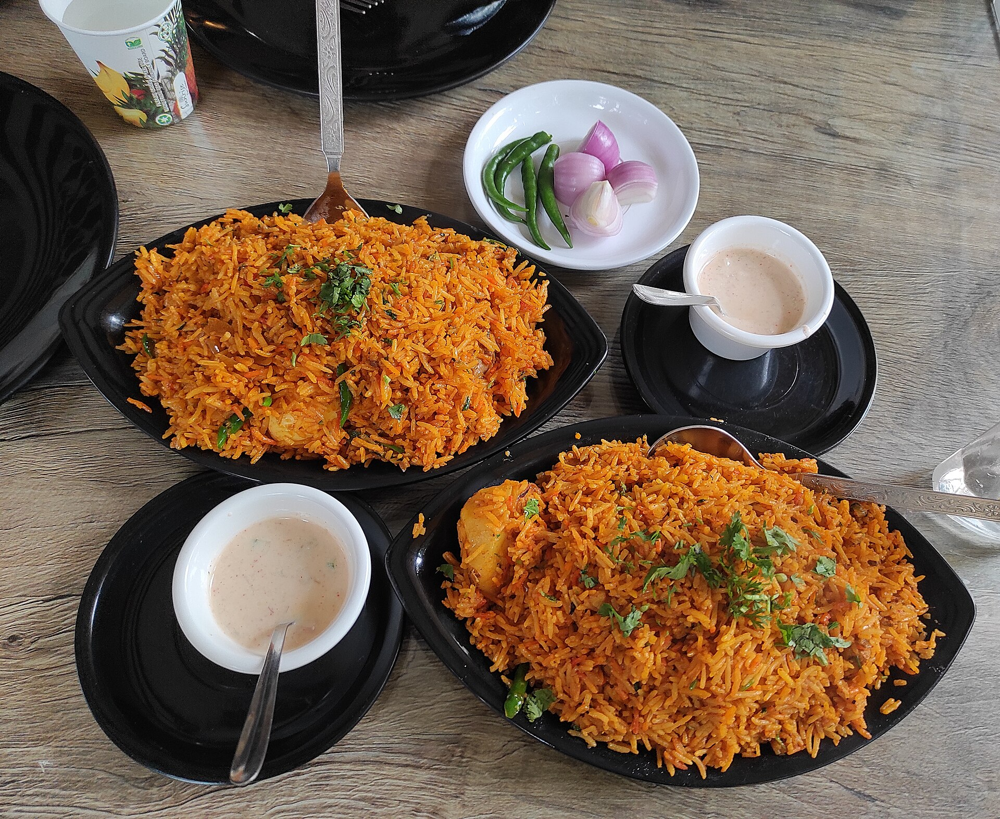
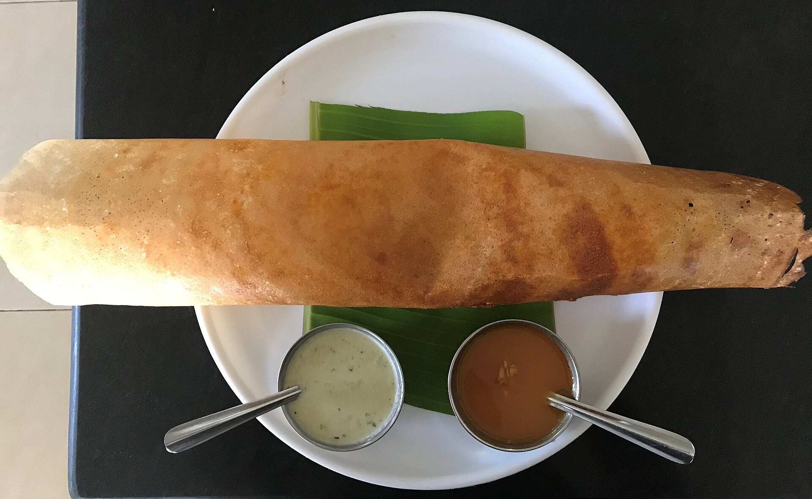
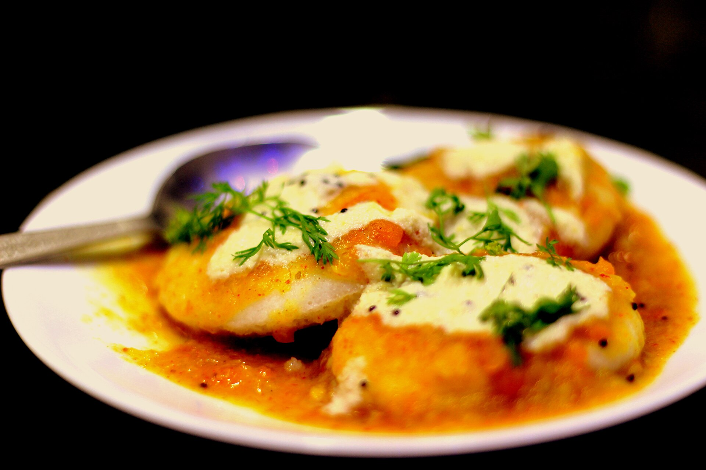
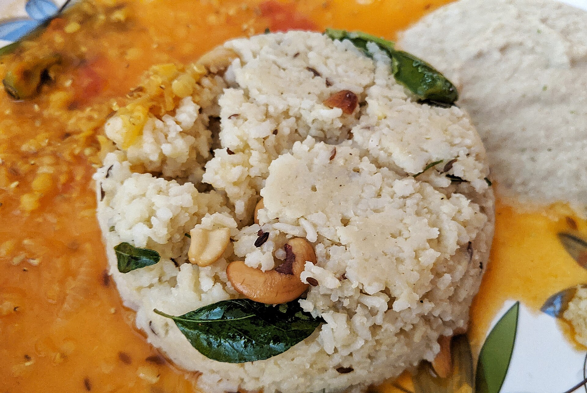

Biryani is a popular Indian rice dish prepared with aromatic spices and vegetables or meat

Masala dosa is a crispy south Indian dish served with potato masla,chutney and sambar

idle is a soft steamed rice cake commonly enjoyed with sambar

Pongal is a traditional south Indian dish made with rice and lentils